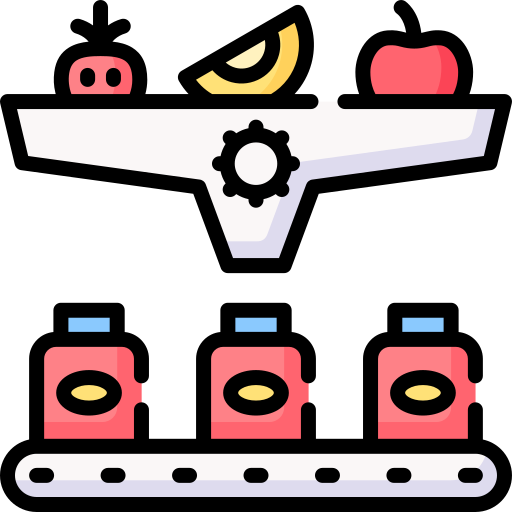
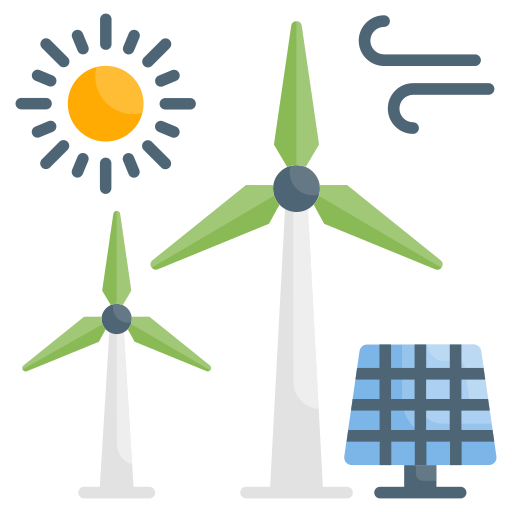
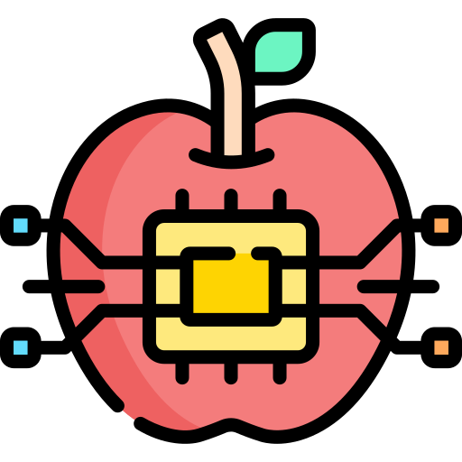

Introduction
The Agriculture Technology Working Group (AgroTec WG) was established at LEARN36 as Sri Lanka’s first national working group focused on digital and technology-enabled agriculture.
The working group operates under the Lanka Education and Research Network (LEARN) and brings together universities, researchers, and practitioners interested in applying digital technologies to agricultural research and development.
AgroTec WG focuses on the use of data science, Internet of Things (IoT), and Artificial Intelligence (AI) to support agricultural productivity, sustainability, and research collaboration. It provides a platform for institutions and individuals to share knowledge, research outcomes, and technical expertise related to agriculture technology.
The activities of AgroTec WG are aligned with the Asia Pacific Advanced Network (APAN) framework, supporting Sri Lanka’s engagement in regional research collaboration and data-sharing initiatives.
Background
Sri Lanka’s agriculture faces real-world constraints. Digital agriculture helps transform constraints into actionable insight and scalable solutions.
Agriculture plays a significant role in Sri Lanka’s economy and supports a large portion of the population. However, the sector faces ongoing challenges such as climate variability, resource constraints, post-harvest losses, and fragmented data systems.
In response, LEARN initiated the AgroTec WG to support a coordinated approach to digital agriculture research. The working group was formed following a two-day national workshop attended by academics, researchers, and industry professionals. Participants discussed national priorities, identified research gaps, and contributed to defining the scope and structure of the working group.
AgroTec WG serves as a link between agricultural research activities in Sri Lanka and regional research communities within APAN—particularly in areas related to agriculture, IoT, and open data.
Overview
A national forum for research and collaboration—built with structure, focus areas, and shared outcomes.
The Agriculture Technology Working Group (AgroTec WG) functions as a national forum for research and collaboration on digital agriculture. Established under LEARN, the working group brings together expertise from universities, research institutions, and related organisations to explore the application of digital technologies in agriculture.
AgroTec WG is organised into five thematic sub-groups, each addressing a specific area of agriculture technology identified during the formation workshop. These sub-groups provide a structured approach to research discussion, pilot activities, and knowledge sharing.
Data & Remote Sensing
Satellite imagery + field data for insight and planning.
IoT for Monitoring
Real-time sensing across production, storage, and transport.
AI Decision Support
Prediction, optimization, and tools for smarter action.
Mission and Objectives
Clear direction, practical outcomes, and long-term coordination.
Mission
To support interdisciplinary research and collaboration in agriculture through the application of digital technologies.
Objectives
- Support research and knowledge sharing in areas such as precision agriculture, data analytics, and agri-supply-chain management
- Facilitate collaboration among Sri Lankan institutions and regional partners through APAN
- Develop and publish a working group charter, terms of reference, and a project roadmap
- Initiate pilot projects and conduct regular meetings and knowledge-sharing sessions
- Establish mechanisms for ongoing collaboration and data exchange among members
Sub-Groups
AgroTec WG operates through five sub-groups—each addressing a national priority area identified during the formation workshop. Select a sub-group to view scope, activities, and participation.
Climate-Resilient and Precision Agriculture
Climate data, field observations, satellite imagery, and AI/ML techniques for monitoring and agricultural planning, particularly for smallholder contexts.

AI-Driven Supply Chain and Post-Harvest Management
Post-harvest losses and supply-chain coordination using IoT, analytics, and dashboards across production, storage, transport, and distribution.

Agri-Voltaic and Renewable Energy Systems
Renewable energy systems and Agri-PV models: land use, crop performance under modified light conditions, and energy generation in agricultural environments.
Digital Platforms for Agriculture and Biodiversity
Digital and geospatial platforms for decision support, crop suitability mapping, carbon accounting, biodiversity indicators, and citizen science contributions.

Nutrition-Sensitive Agriculture and Food Systems
Indigenous crops, bio-active compounds, and digital/AI methods supporting nutrition-sensitive and climate-smart agriculture practices and food systems.
Integration with AI and Collaboration
AI is applied across prediction, monitoring, and decision-support—and strengthened through collaboration.
Artificial Intelligence is considered across the thematic areas of AgroTec WG, including data analysis, prediction, monitoring, and decision-support applications. AgroTec WG also collaborates with the GenAI Working Group to explore intersections between generative AI research and agricultural applications, as discussed during LEARN36.
The working group has agreed to conduct regular meetings each year to review progress, share findings, and coordinate activities across sub-groups.
Partnerships and Regional Engagement
Aligned to regional standards and collaboration opportunities across the Asia-Pacific.
AgroTec WG engages with APAN and its related working groups, including those focused on open data and IoT. These engagements support alignment with regional research practices and provide opportunities for Sri Lankan researchers to participate in collaborative activities across the Asia-Pacific region.
Looking Ahead
A long-term national commitment—built to produce scalable and sustainable outcomes.
The Agriculture Technology Working Group represents a long-term national commitment to transforming Sri Lanka’s agriculture through research, innovation, and collaboration. By uniting expertise across disciplines and borders, AgroTec WG aims to deliver practical, scalable, and sustainable solutions that benefit farmers, researchers, and the broader economy.